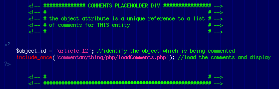
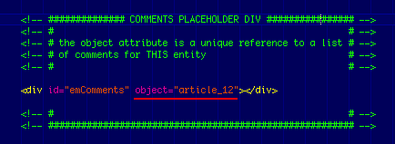

Comment Anything — Facebook Style
Author: Kulikov Alexey <a.kulikov@gmail.com>
Date: 01.04.2010
Introduction
This small but very powerful script allows any novice webmaster to add a facebook-like commenting feature to pretty much anything on the website. Apart from technical excellence and blistering speed it features almost complete customization. Blend it easily into any existing website in minutes.
Feature List
- Ajax Based Comment Anything, no page reloads whatsoever
- Dead easy implementation — just add javascript and a <div> to load data into
- Total Spam protection
- Obfuscated commentor's eMail addresses — avoid all spam
- 100% Customizable view and layout (including all language data)
- Gravatar support
- Automatically resizing textarea for improved usability
- Input elements text placeholders for better usability
- Go minimal by disabling name and email inputs
What is included in the Package
- index.php — a fully functioning example of a dummy article and a comment box on one page using a PHP loader — where the whole comment block is prepared with php and rendered directly into the page's HTML(with options)
- index.html — a fully functioning example of a dummy article and a comment box on one page using a JavaScript loader — where the whole comment block is loaded via ajax (with options)
- commentanything/* — the PHP back-end, JS and CSS data that do all the *magic*
Option a. Installation via PHP Loader
- Copy ALL the files (except index.html and index.php) to your project root directory.
-
When you open index.php, there are two clearly marked sections that need your attention:
- SCRIPTS AND STYLES — this section has to be included in the <HEAD> element of your web project.
-
COMMENTS PLACEHOLDER — this section will create all the neccessary HTML which will be populated with comments and the comment add form all facebook style. In order to distinguuish between different pages that are commented, you have to set the «$object_id» parameter to some name, make sure you use some unique names to identify your content. Good examples are article_1, article_2, article_3 et cetera.

- The copy procedure shall be done now, please proceed to configuration.
Option b. Installation via JavaScript Loader
The JavaScript loader is different to the PHP loader in that it will make an ajax call to the server once the page has loaded and fetch all the comments. This may be a desired behaviour in case you do not want the comments to be indexed by search engines or spam bots.
- Copy ALL the files (except index.html and index.php) to your project root directory.
-
When you open index.html, there are two clearly marked sections that need your attention:
- SCRIPTS AND STYLES — this section has to be included in the <HEAD> element of your web project.
-
COMMENTS PLACEHOLDER — this DIV will be populated with the comments and the comment add form all facebook style. In order to distinguuish between different pages that are commented, this DIV has an attribute called «object» — make sure you use some unique names to identify your content. Good examples are article_1, article_2, article_3 et cetera.

- The copy procedure shall be done now, please proceed to configuration.
Configuration
- It is essential to set your database connection details in order for the script to perform as expected, open commentanything/config.inc.php and enter the following settings (these shall be provided by your hosting provider)
- $DB_HOST — the database host (usually "localhost")
- $DB_USER — the database user
- $DB_PASS — database access password
- $DB_NAME — database name where the comments shall be stored
- Feel free to edit other settings inside commentanything/config.inc.php such as language and display settings to fit your needs.
- The look and feel of the comments box can be adjusted in the css file commentanything/css/main.css
Troubleshooting
Shall you have any problems setting up, please do not hesitate to contact me under a.kulikov@gmail.com, I am available daily and will gladly resolve your issues.
Credits
Author: Kulikov Alexey, April 01, 2010 — Vienna, Austria